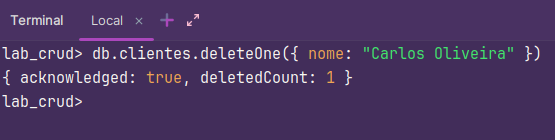
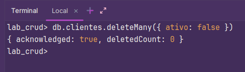

5. DELETE - Remover DocumentosRemover um Documento db.clientes.deleteOne({ nome: "Carlos Oliveira" }) Remover Múltiplos Documentos // Remover todos os clientes inativos db.clientes.deleteMany({ ativo: false }) Last modified: 25 março 20254. UPDATE - Atualizar Documentos6. INDEX - Criar Índices para Melhorar Consultas